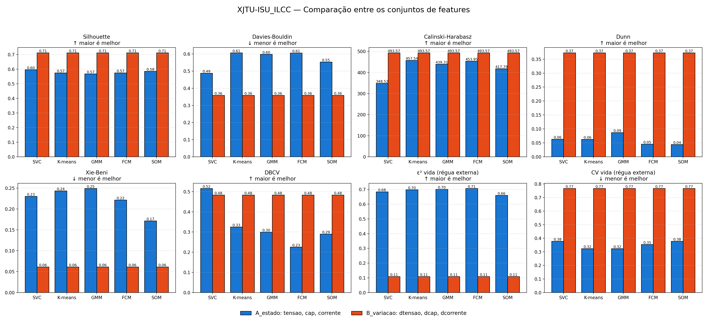
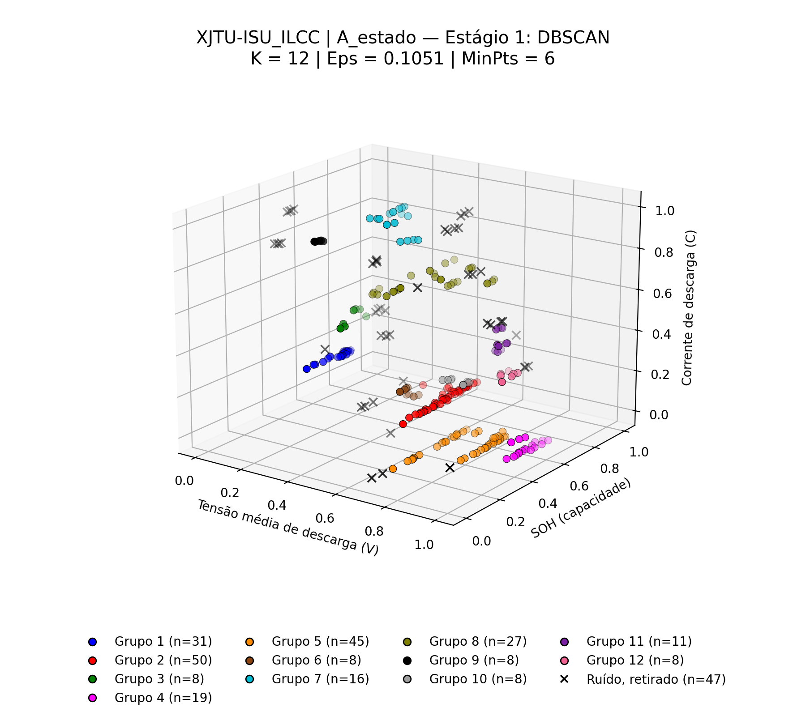
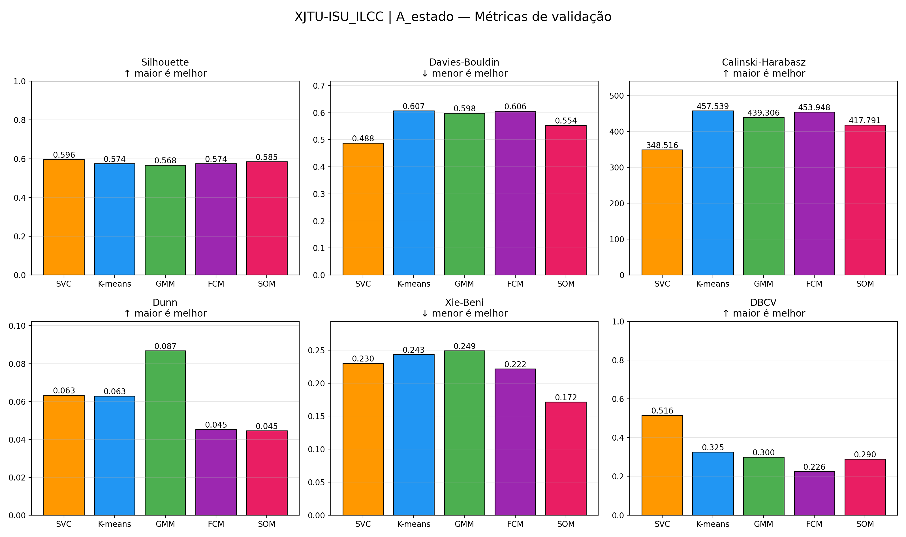
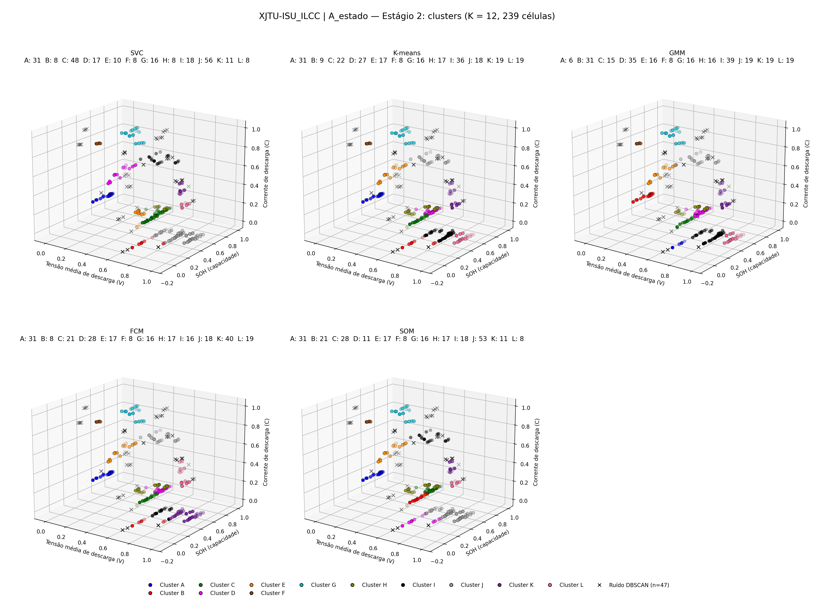
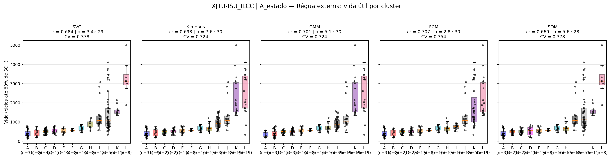
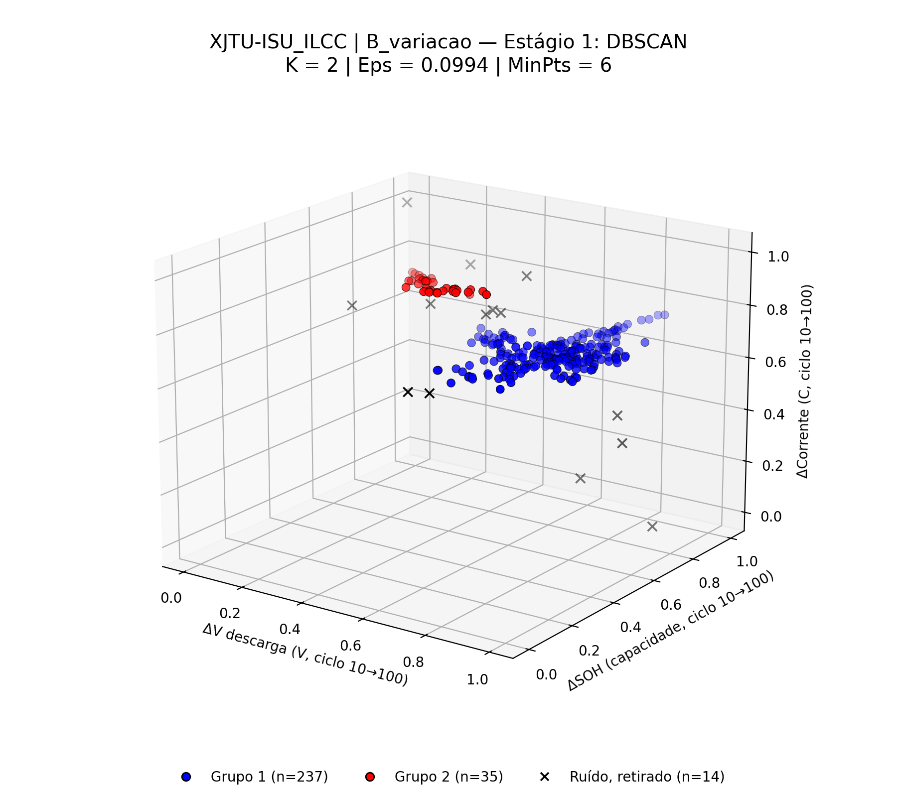
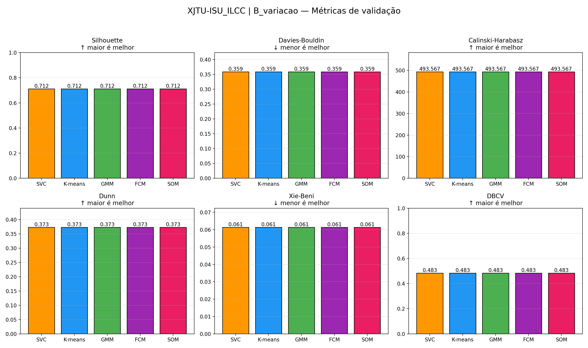
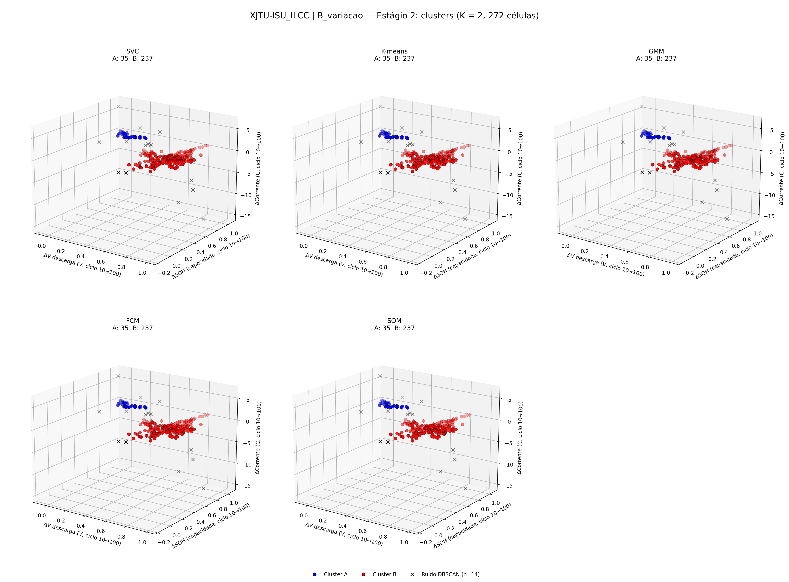
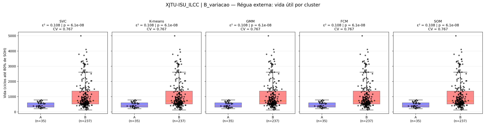

Comparação de conjuntos de features — XJTU-ISU_ILCC (BatteryLife), DBSCAN + 5 algoritmos
A_estado: tensao,cap,corrente · B_variacao: dtensao,dcap,dcorrente
ciclos 6–10 e 96–100 · MinPts = 6 · K = do DBSCAN · régua externa: vida útil (ε² do Kruskal-Wallis e CV)
Resumo
| teste | features | células | ruído | células no estágio 2 | K DBSCAN | K usado | Eps | maior silhueta | maior ε² vida | situação |
|---|---|---|---|---|---|---|---|---|---|---|
| A_estado | tensao, cap, corrente | 286 | 47 | 239 | 12 | 12 | 0.1051 | SVC | FCM (0.707) | ok (5 aviso(s)) |
| B_variacao | dtensao, dcap, dcorrente | 286 | 14 | 272 | 2 | 2 | 0.0994 | SVC | SVC (0.108) | ok |
Comparação entre os conjuntos

Placar: em quantos algoritmos cada conjunto ganhou cada métrica
| A_estado | B_variacao | |
|---|---|---|
| métrica | ||
| Silhouette | 0 | 5 |
| Davies-Bouldin | 0 | 5 |
| Calinski-Harabasz | 0 | 5 |
| Dunn | 0 | 5 |
| Xie-Beni | 0 | 5 |
| DBCV | 1 | 4 |
| ε² vida | 5 | 0 |
| CV vida | 5 | 0 |
| TOTAL internas | 1 | 29 |
| TOTAL régua da vida | 10 | 0 |
A_estado: tensao, cap, corrente
células: 286 · ruído: 47 · células no estágio 2: 239 · K DBSCAN: 12 · K usado: 12 · Eps: 0.1051 · maior ε² vida: FCM (0.707)
Situação: ok (5 aviso(s))




Tabela de métricas
| Silhouette | Davies-Bouldin | Calinski-Harabasz | Dunn | Xie-Beni | DBCV | ε² vida | p (Kruskal-Wallis) | CV vida | |
|---|---|---|---|---|---|---|---|---|---|
| SVC | 0.5959 | 0.4877 | 348.5158 | 0.0634 | 0.2303 | 0.5156 | 0.6844 | 0.0 | 0.3781 |
| K-means | 0.5740 | 0.6069 | 457.5392 | 0.0629 | 0.2435 | 0.3253 | 0.6978 | 0.0 | 0.3235 |
| GMM | 0.5680 | 0.5982 | 439.3055 | 0.0867 | 0.2490 | 0.2996 | 0.7013 | 0.0 | 0.3241 |
| FCM | 0.5742 | 0.6060 | 453.9475 | 0.0453 | 0.2216 | 0.2258 | 0.7067 | 0.0 | 0.3541 |
| SOM | 0.5849 | 0.5536 | 417.7912 | 0.0445 | 0.1715 | 0.2902 | 0.6596 | 0.0 | 0.3778 |
B_variacao: dtensao, dcap, dcorrente
células: 286 · ruído: 14 · células no estágio 2: 272 · K DBSCAN: 2 · K usado: 2 · Eps: 0.0994 · maior ε² vida: SVC (0.108)
Situação: ok




Tabela de métricas
| Silhouette | Davies-Bouldin | Calinski-Harabasz | Dunn | Xie-Beni | DBCV | ε² vida | p (Kruskal-Wallis) | CV vida | |
|---|---|---|---|---|---|---|---|---|---|
| SVC | 0.712 | 0.3588 | 493.5669 | 0.3729 | 0.0613 | 0.4829 | 0.1083 | 0.0 | 0.767 |
| K-means | 0.712 | 0.3588 | 493.5669 | 0.3729 | 0.0613 | 0.4829 | 0.1083 | 0.0 | 0.767 |
| GMM | 0.712 | 0.3588 | 493.5669 | 0.3729 | 0.0613 | 0.4829 | 0.1083 | 0.0 | 0.767 |
| FCM | 0.712 | 0.3588 | 493.5669 | 0.3729 | 0.0613 | 0.4829 | 0.1083 | 0.0 | 0.767 |
| SOM | 0.712 | 0.3588 | 493.5669 | 0.3729 | 0.0613 | 0.4829 | 0.1083 | 0.0 | 0.767 |